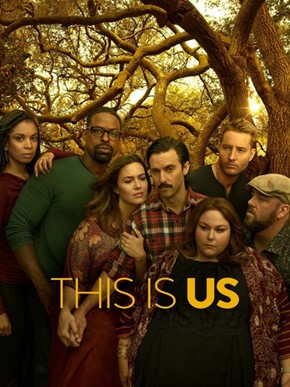

<section class="article-amazon-videos py-5">
  <div class="container">
    <div class="row justify-content-center">
      <article class="col-sm-8">
        <h2>This is us</h2>
        <h5>Une ôde à la vie et à ses maux</h5>

        <div class="article_img">
          
        </div>

        <p>
          Découverte très récemment sur Amazon Prime, cette série est arrivée tout en haut de mon top de toutes les SVOD confondues. J’ai très vite accroché pour ne plus la lâcher. Emotions garanties.
        </p>

        <p>
          JCette ode à la vie traite de sujets de société complexes et importants tels que l’amour, la parentalité, l’adoption, le racisme, la mort, l’enfance, l’adolescence, l’acceptation des différences, les addictions, le mal-être, la dépression, le surpoids, le handicap, la maladie, la vieillesse, les non-dits, j’en oublie certainement…
        </p>

        <p>
          Des sujets poignants qui nous touchent très certainement un peu tous de prés ou de loin dans nos vies et nous amènent à réfléchir.
        </p>

        <p>
          Les personnages sont tous aussi touchants et attachants les uns que les autres et nous embarquent dans le tourbillon de la vie à plusieurs époques de leur vie. Une famille, sommes toutes simple, qui malgré les différends entre les uns et les autres apporte un message d’amour et d’unité.
        </p>

        <p>
          Il y a pour le moment 4 saisons sur le catalogue Français, j’ai vraiment hâte de voir la saison 5 arriver.
        </p>

        <iframe width="560" height="315" src="https://www.youtube.com/embed/FRmqKqjAVlM" frameborder="0" allow="accelerometer; autoplay; clipboard-write; encrypted-media; gyroscope; picture-in-picture" allowfullscreen></iframe>

        <p class="signature text-end"><strong>Zira</strong></p>
      </article>

    </div>

  </div>

</section>


